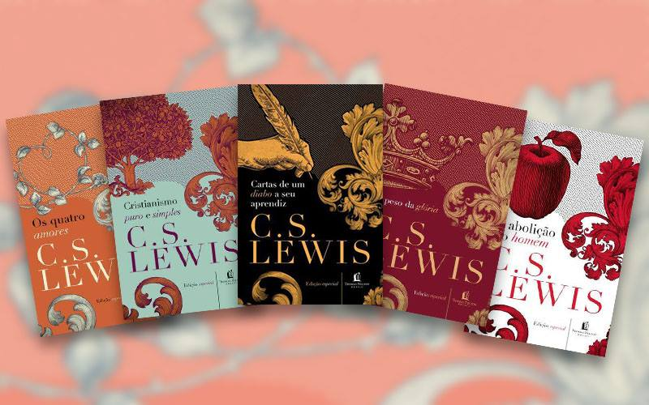

Clive Staples Lewis, comumente referido como C. S. Lewis, foi um professor universitário, escritor, romancista, poeta, crítico literário, ensaísta e teólogo irlandês. Durante sua carreira acadêmica, foi professor e membro do Magdalen College, tanto da Universidade de Oxford como da Universidade de Cambridge. Ele é mais conhecido por seus trabalhos envolvendo a apologia cristã, incluindo as obras:
- O Problema do Sofrimento;
- Milagres e Cristianismo Puro e Simples;
- E a ficção e a fantasia, sendo as obras As Crônicas de Nárnia.
Foi também um respeitado estudioso da literatura medieval e renascentista, tendo produzido alguns dos mais renomados trabalhos acadêmicos envolvendo esses temas no século XX.
Em vida, foi grande amigo do também professor universitário e escritor britânico J. R. R. Tolkien (1892-1973) autor de O Senhor dos Anéis. Juntos, os dois serviram como membros do corpo docente da Faculdade de Língua Inglesa da Universidade de Oxford e lideraram o grupo informal de discussão e colaboração literária The Inklings. Apesar de ter sido criado ao longo da infância dentro das tradições da Igreja da Irlanda, se tornou um ateu convicto na altura de sua adolescência, seguindo essa linha de convicção pessoal até o início de sua idade adulta, quando, por intermédio de Tolkien, voltou a professar a fé cristã, tornando-se um árduo apologeta do cristianismo até o fim de sua vida e carreira.
